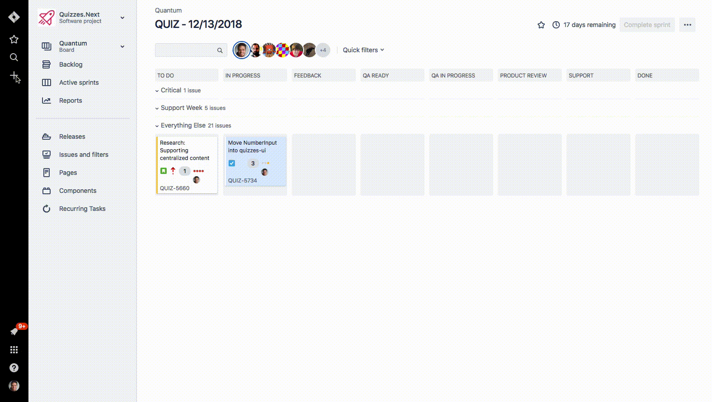
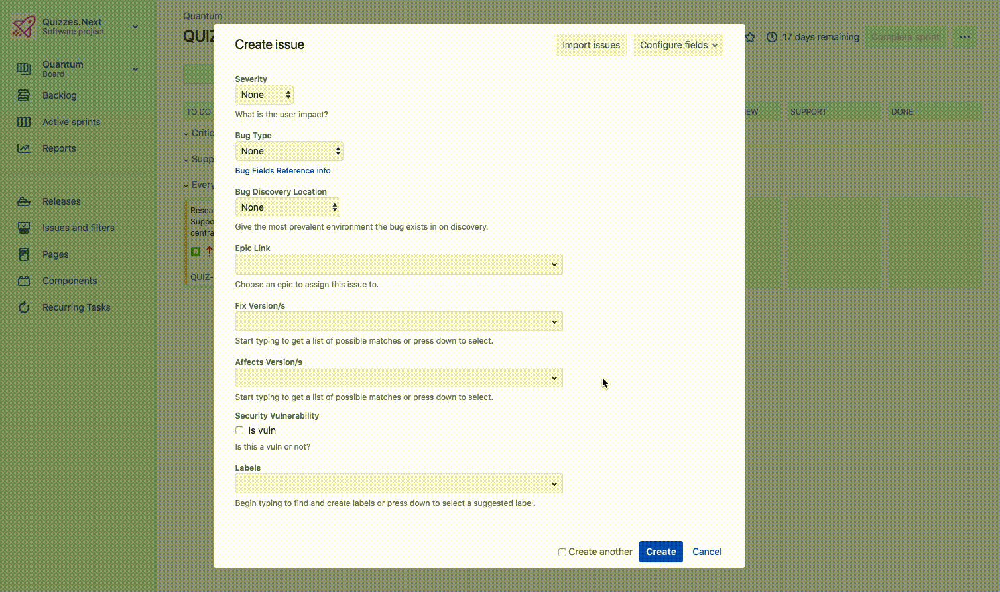
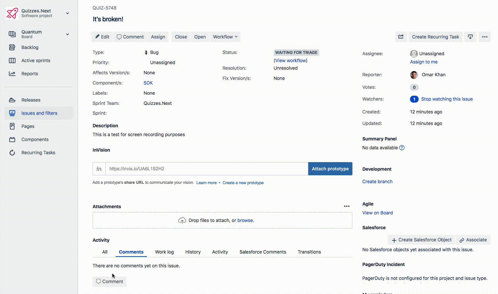
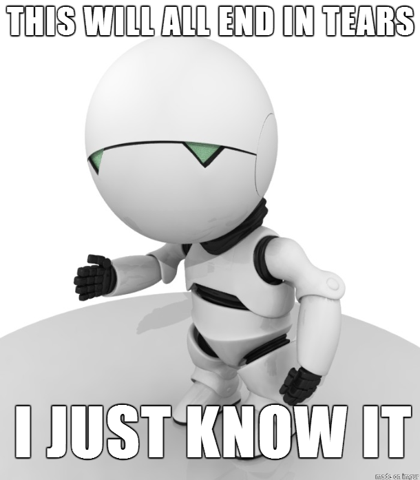
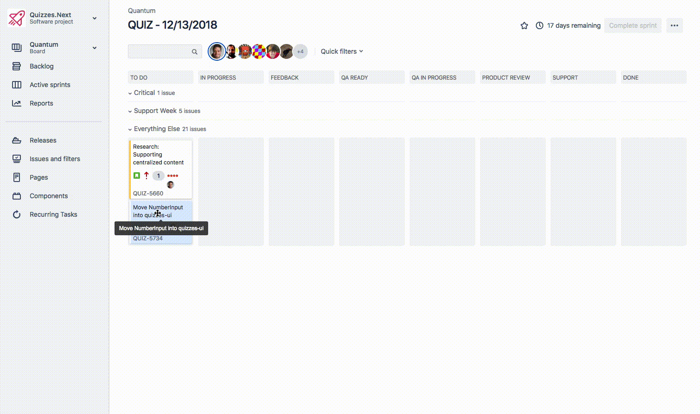
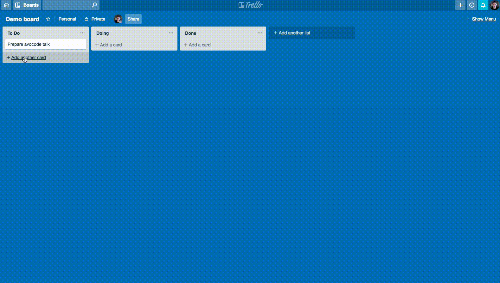
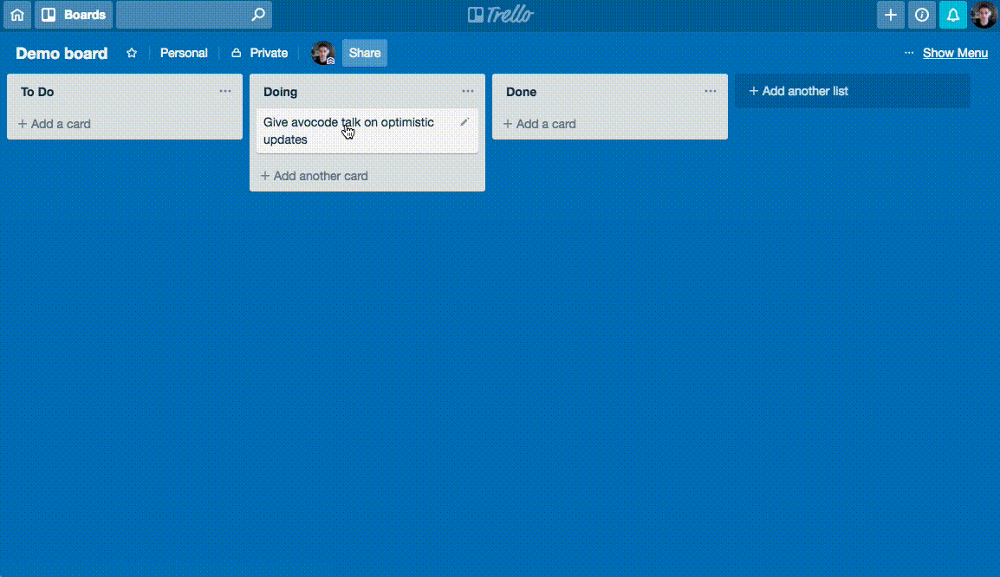
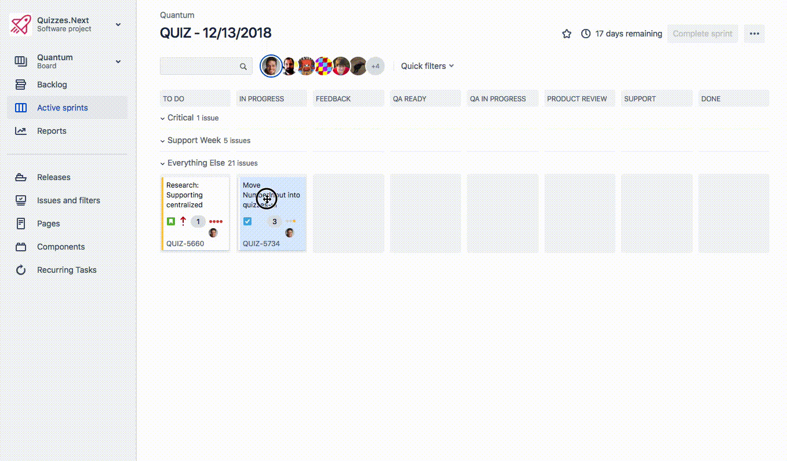

Q: Why pessimistic?
Q: Why pessimistic?
A: Because they don't let the user do anything until the request completes. They assume that the request will fail, which is kinda pessimistic.



Q: Why do we call these "optimistic" updates?
A: Because they assume that the request will succeed, and update the UI immediately as if it had, without waiting for a response.

